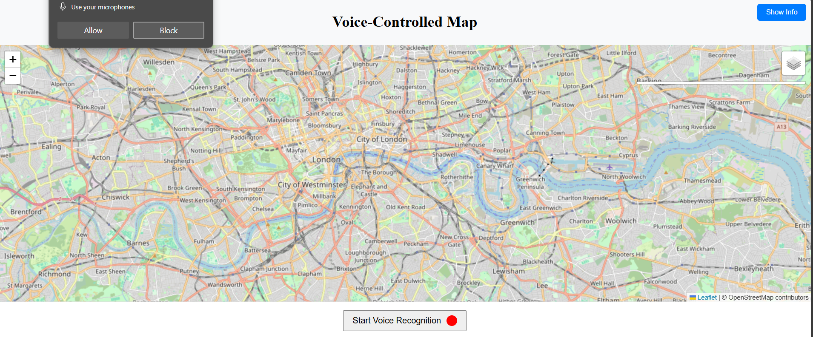
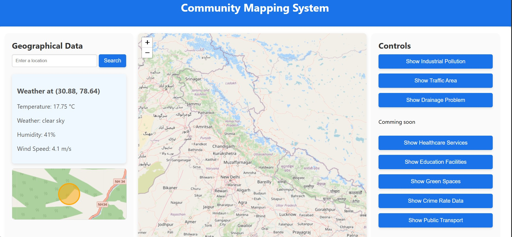
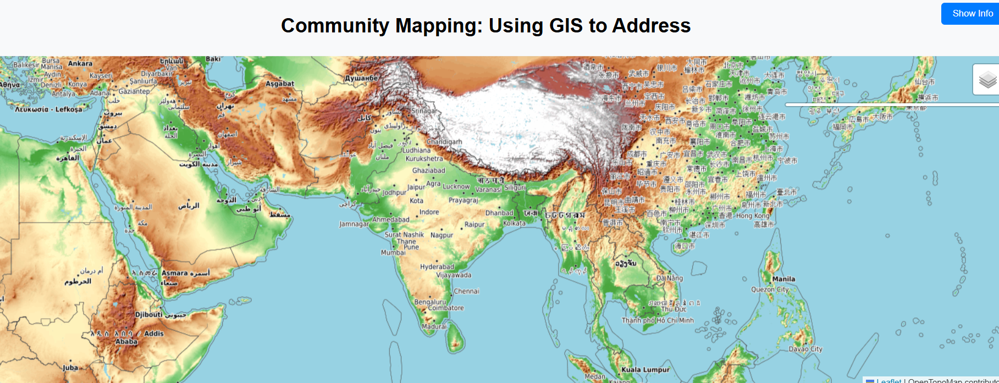
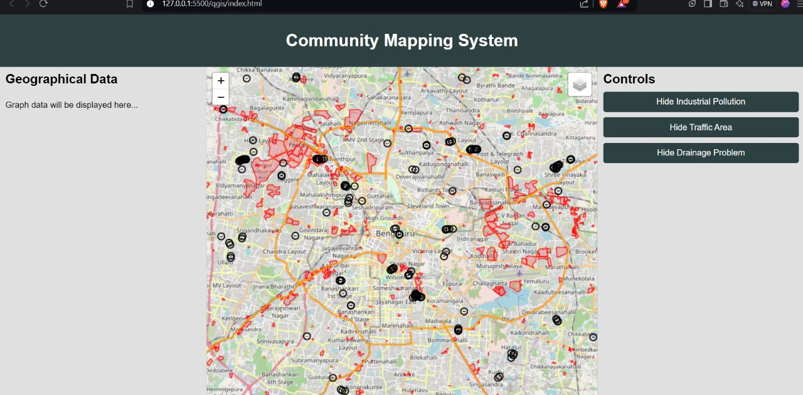
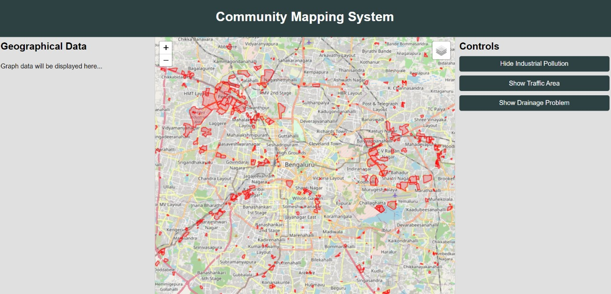
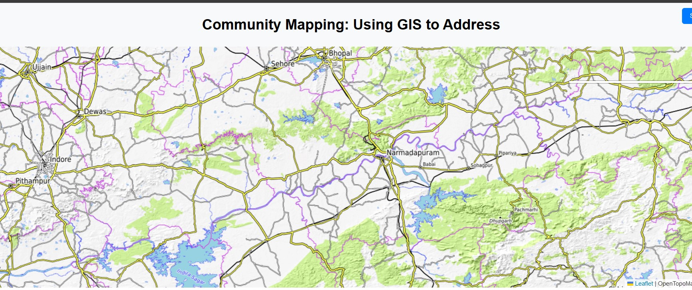

Community mapping Services







— Proverse: A GIS-Powered Platform for Visualizing Community Issues" "Unlocking Insights, Informing Solutions —
Get StartedProverse is a neat application of the use of Geographic Information Systems to analyze and present on a map that particular issue in a community: possibly access to public services, environmental issues, housing problems, or traffic patterns. The GIS technology assists its users in overlaying geographic data such as roads, population density, schools, parks on a map and studies their spatial relationships.
Click Here For MoreExplore community mapping issues, allowing users to visualize and analyze local challenges and resources.
ExploreImplement voice-enabled mapping systems that allow users to control and interact with maps using voice commands.
ExploreCreate individual mapping solutions that showcase essential locations like schools, colleges, hospitals, and grocery stores.
Explore